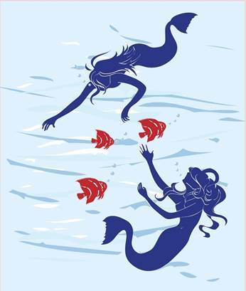

This doesn’t have to be a game where you lose every time you play. You can have fun with this. When it comes to opening up, letting love in, and finding your soulmate, it can be a fun experience. Let those impulses lead you forward. If you feel a negative emotion, surrounding your desire, look at it. It’s a piece of the puzzle that needs reorganized. Allow the piece to unfold, so that you can restore the balance you need.
Be playful with yourself.
We see you as an ever-evolving group of souls that are always creating what they desire.
We know you may think, but I’m not creating what I desire. That’s why I don’t have a soulmate yet!
We know that’s how it appears, but that’s because your energy isn’t ready for one. If you look at it as part of the fun, you’ll start to see your old relationships for what they were—lessons. They are helping you get to where you need to go.
It’s when you stay hung up on those encounters, that you block up the playfulness of your life. You can have fun with this, guys. Have fun with this. We know we keep repeating this, but there are endless games, lessons, and encounters awaiting your attention.
When you give your attention to something that doesn’t serve you, you’ll only create a game where it feels like you’re losing. When you give up that focus-factor and turn your attention on creating a new experience, you’ll see beautiful things start to enfold around you.
Say this to yourself, I am a creator. I can have fun with what I create today. Let go of the grumpiness that seems to hit you some days. Let it go. Things will work out for you, if you hold your attention to what you desire.
As children, all you did was play every single day. Look at the joy it brought to imagine. It felt happy. Joyful. Good. Endless.
You didn’t care if someone thought you were weird—you played anyways.
This is what we want to help you back toward. Playfulness. A relationship is two souls playing together. They create something specific to this world. If you’ve played with someone, only to have the creation process shatter, we want to help you recover from that.
The old reality you both created doesn’t have to be forever. You can let that creation go, and move onto the next one. We will give you this illustration, because it comes to the author’s mind. When you are creating a book, for example, you may have the energy, impulses, and ideas flowing for a while. Sometimes it just stops. As a creative person, you can choose to move on, or let that creation stump you for years.
This is much like relationships that fail. You can look back on what failed, and let it keep you stalled forever, or you can start a new creative project and move forward. Z.Z. has created endless stories that stalled out, but she doesn’t allow that to slow down her present moment with her new creations. This is how we want you to view a relationship. Don’t let the past stall you out anymore.
It’s time to be playful with it. You may glance at the past, some days, and see how you used to be, but that doesn’t mean that’s who you are now. The only way you’ll repeat the old mistakes is if you keep revisiting them.
Look at them, accept them, and move forward with your playfulness. You can create a new thing today. Let go of the old issues. If one pops up, be playful about it. See yourself through the eyes of love and compassion, and let it dance you forward.
Don’t take your mistakes so seriously. They aren’t really mistakes at all. They are creations that you’ve learned and grown from. If you made a creation you no longer like, drop it, and move onto creating a new thing.
It’s okay. Be playful. Be joyful.